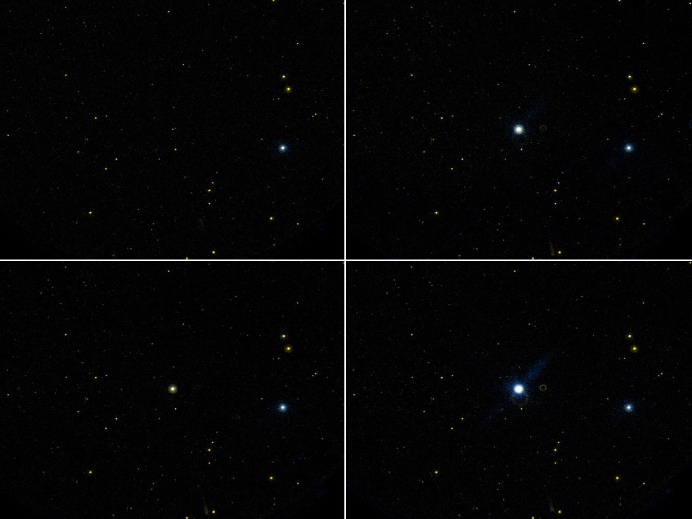

Me stars are stars of spectral type M that additionally display emission lines in their spectra. The lowercase “e” appended to the Morgan–Keenan–Kellman (MK) spectral type indicates the presence of emission lines, so “Me” denotes a cool, red star (surface temperature below ~3,900 K) whose spectrum shows lines in emission rather than, or as well as, absorption. The designation spans two physically distinct populations: magnetically active M dwarfs and pulsating M giant variables.

NASA/JPL-Caltech
{kind=link}
dMe stars (main-sequence M dwarfs with emission lines, often written dMe) produce their emission through magnetic activity. Rapid rotation drives a strong dynamo in the fully convective interior, heating the chromosphere and corona to temperatures sufficient to excite hydrogen Balmer emission — most prominently H-alpha at 6563 Å — alongside ultraviolet and X-ray radiation. The fraction of M dwarfs that are emission-line objects rises steeply with decreasing mass and luminosity: approximately 5% of M0 dwarfs show emission, rising to ~50% at type M4.5 and approaching 100% at M5.5 and later. Late-type dMe stars can sustain high activity levels for more than 7 billion years, whereas early-type dMe stars (M0–M2) spin down and become inactive within 1–2 billion years. The most active dMe stars also undergo energetic flares, and are classified as UV Ceti-type variables: UV Ceti itself (Gliese 65 B, M5.5Ve) can brighten 75-fold in 20 seconds, while EV Lacertae (M3.5Ve) produced a 2008 flare thousands of times more powerful than the Sun’s largest recorded solar flare. Proxima Centauri (M5.5Ve), the nearest star to the Sun at 4.24 light years, is a well-studied dMe flare star; its frequent energetic flares are considered a significant factor in the habitability of any orbiting planets.
Me giants (luminosity class III or I, classified as M IIIe or M Ie) produce emission by a different mechanism: pulsation-driven shock waves propagate outward through the extended stellar atmosphere and excite emission near light maximum. Hydrogen Balmer lines and metal lines — including Fe I at 4202 and 4308 Å, and Mg I at 4571 Å — are observed, with hydrogen and metal emission varying in antiphase as the shock progresses. The prototype is Mira (omicron Ceti, M7 IIIe), a long-period variable first recorded by David Fabricius in 1596 and named by Johannes Hevelius in 1662. Mira pulsates with a period of approximately 332 days, its spectral type varying between M5e and M9e as its radius swells and contracts between roughly 332 and 402 solar radii; its luminosity reaches 8,400–9,360 times that of the Sun, and its visual magnitude ranges from 2.0 to 10.1. Cool, extended AGB atmospheres of Me giants also support natural maser emission from OH, SiO, and H2O molecules.
The “Me” notation is not a class independent of luminosity: the same “e” suffix applies across the Hertzsprung–Russell diagram for any M-type object displaying emission lines. Me stars should not be confused with Be stars, which are hot B-type emission-line stars whose emission arises from a circumstellar disc formed by rapid rotation — a completely different physical mechanism.
See also: M-type star, red dwarf, Be star, emission line, chromosphere, variable stars.